Code
library(rms)
library(ggplot2)
library(splines)
library(lspline)
library(lmtest)
library(sandwich)
library(car)
library(knitr)
tryCatch(source('pander_registry.R'), error = function(e) invisible(e))Lecture 11
October 7, 2024
library(rms)
library(ggplot2)
library(splines)
library(lspline)
library(lmtest)
library(sandwich)
library(car)
library(knitr)
tryCatch(source('pander_registry.R'), error = function(e) invisible(e))When covariates are measured on a continuous scale, we have many different approaches to analysis
To date, we have focused primarily on approaches that facilitate interpretation of our parameter estimates
Flexible modeling of continuous covariates are another option
Interpretation often relies on plots, except in special cases
It is best to pre-specify how we intend to model continuous covariates to avoid data-driven modeling decision
We have many choices for modeling dose-response
Consider the scientific question when deciding on an appropriate model
How does the scientific question you want to answer relate to how you model the dose-response relationship?
Will describe methods for
Modeling complex dose-response curves
Flexible methods (non-parametric loess smooths, parameteric regression splines)
When testing for associations, we are implicitly comparing two models
“Full” model
Usually corresponds to alternative hypothesis
Contains all terms in the “restricted” model plus some terms that we want to test for inclusion
Example: \(g(\theta) = \beta_0 + \beta_1 * X_1 + \beta_2 * X_2\)
“Restricted” model
Usually corresponds to the null hypothesis
Terms in the model are the subset of the terms in the full model that are not being tested
Example: \(g(\theta) = \beta_0 + \beta_1 * X_1\)
Jargon: The restricted model is “nested” in the full model
If we set some parameters in the full model equal to zero, we will get the restricted model
We have very good methods for testing differences between nested models
Our methods are not as good for comparing models that are not nested
Non-nested models (e.g. \(X_1\) is weight, \(X_2\) is height)
\(g(\theta) = \beta_0 + \beta_1 * X_1\)
\(g(\theta) = \gamma_0 + \gamma_2 * X_2\)
Our scientific interpretation of our statistical tests depends on the meaning of the restricted model compared to the full model
Appears very straightforward when we are only considering one full model compared to one restricted model
In practice, we may have many restricted models in mind
Multiple testing problem appears if we are considering many restricted models
Full model: FEV vs smoking, age, height
Restricted model: FEV vs age, height
If the full model provides no clear advantage over the restricted model, then we conclude that there is insufficient evidence to suggest an association between FEV and smoking when controlling for age and height
Note how carefully I stated the above
“Insufficient evidence” (not evidence that smoking is not associated)
Conditional on controlling for age and height. Smoking, alone, may be an important predictor of FEV. The question answered by the full and reduced model is a comparison of FEV “among individuals of the same age and height but differing in smoking status” not just individuals who differ in smoking status.
Full model: Survival vs cholesterol and cholesterol\(^2\)
Linear and quadratic terms for cholesterol
Model allows for a parabolic shape for chelesterol
Restricted model: Survival vs cholesterol
If the full model provides no clear advantage over the restricted model, we conclude that there is insufficient evidence to suggest a U-shaped trend in survival with cholesterol
Note that a quadratic term does not include all possibilities for non-linearity. We will cover other (better) approaches later in the notes
Wald test
Fits only the full model
Tests if the parameter (or parameters) in the full model are equal to zero
Can be used for robust and non-robust standard error estimates (fit using GEE)
Likelihood Ratio test
Fits both the full and reduced model
Compares the likelihood functions to determine if they are significantly different
Can be used for non-robust models only (fit using likelihood)
Score test
Only fits the reduced model
Considers the gradient of the likelihood function. After fitting the reduced model, looks at what is left over to see if it can be predicted by additional covariates
Not generally reported in regression model setting, but some common tests are Score tests (e.g. log-rank test)
In large samples, the Wald, Likelihood Ratio, and Score tests converge
Models to test for effect modification (interactions) are hierarchical
Full Model: Include the interactions
Reduced Model: Set the interactions to be tested in the full model to zero
Best scientific approach is to pre-specify the statistical model that will be used for analysis
Sometimes we choose a relatively large model including interactions
Allows us to address more questions (e.g. effect modification)
Sometimes gives greater precision
Deciding which parameters to test from the full model
It can be difficult to decide the statistical test that corresponds to specific scientific questions
Need to consider the restricted model that corresponds to your null hypothesis
In the following examples, the full model is the same but we change the restricted model based on the scientific question
Full model: Survival vs sex, smoking, sex-smoking interaction
Example Question 1: Is there effect modification?
Restricted model: Survival vs sex and smoking
Example question 2: Is there an association between survival and sex?
Restricted model: Survival vs smoking
Test that parameters for sex and sex-smoking interaction are zero
Does sex effect survival in either smokers or non-smokers?
Example question 3: Is there an association between survival and smoking?
Restricted model: Survival vs sex
We are often tempted to remove parameters that are not statistically significant before proceeding to other tests
You will find many textbooks that advocate using this analysis approach
e.g. fit the interaction, if it is not significant, exclude it from the model
Such texts are invariable written by mathematicians with no understanding of the underlying science
When you work in the same scientific area, you will eventually “discover” false-positive assocations if you use this model building technique
Such data-driven analyses tend to suggest that failure to reject the null means equivalence
But, if you make this conclusion, you are wrong (large p-values do not indicate equivalence)
Abscence of evidence is not evidence of abscence
A procedure where we fit one model, and then use the results to determine the next model we will fit tends to underestimate the true standard error
A consequence of the genearl multiple testing problem
Will lead to declaring statistical significance more often than you should (inflates type-I error rate)
May also lead to parameter estimates that are biased away from the null
Statistical significance increases as a function of the effect size and the inverse of the standard error
If, by chance, you see a large effect in your sample, you will be more likely to declare significance
How we interpret “negative” studies
There are other many reasons for not rejecting the null hypothesis of zero slope
There may be no association
There may be an association, but not in the parameter considered (i.e. the mean response)
There may be an association in the parameter considered, but the best fitting line has zero slope (a curvilinear association in the parameter)
There may be a first order trend in the parameter, but we lack sufficient statistical precision to be confident that it truly exists (a type-II error)
Be careful to not just assume that it the first reason, no association
Statistically, there is no way of discriminating between these four possibilities unless you have an infinite sample size
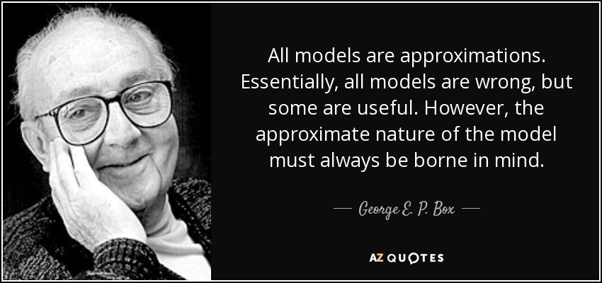
set.seed(1234)
n <- 100
plotdata <- data.frame(x=1:n,
y=20 + 50 / (1+exp(-.15*(1:n-50))))
plotdata$y <- plotdata$y + rnorm(n,0,4)
ggplot(plotdata, aes(x=x, y=y)) + geom_point() + theme_bw() + geom_smooth()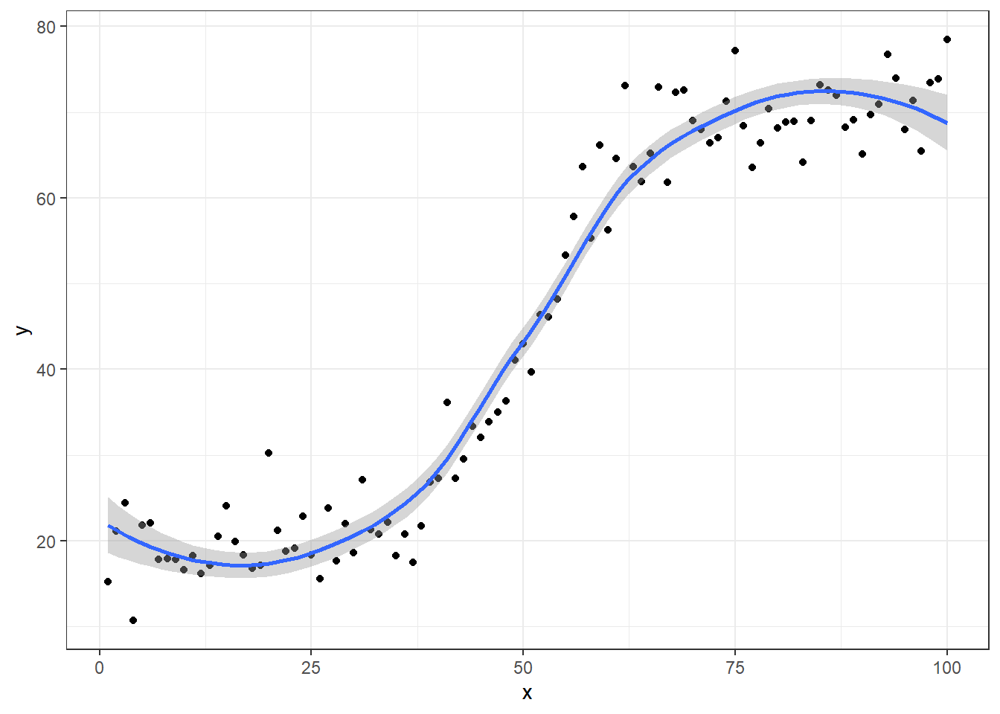
If we happen to sample over the entire range of \(X\) (in this example, from 0 to 100), we will would observe all parts of the S-curve
However, if we were only to sample from a limited range of \(X\), we might observe only parts of the curve where it was approximately linear
plotdata$xint <- cut(plotdata$x, c(0,30,70,100))
ggplot(plotdata, aes(x=x, y=y)) + facet_wrap(~ xint) + geom_point() + theme_bw() + geom_smooth()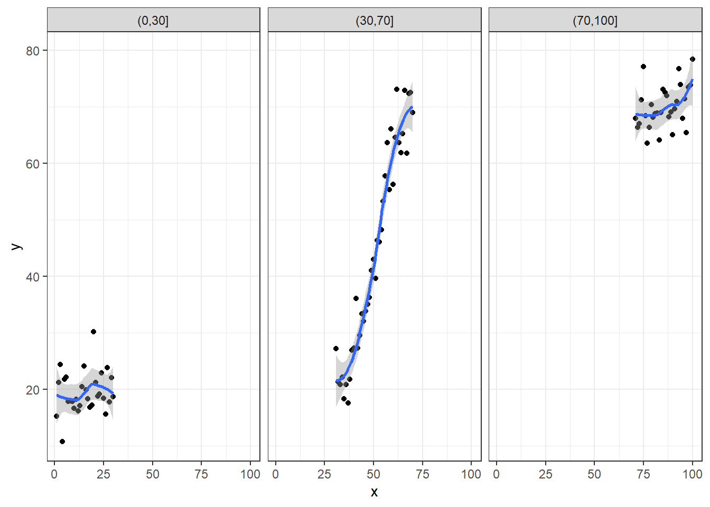
The default smooth for ‘geom_smooth’ when there are fewer than 1000 data points is a loess smooth. These fits appear in the plots above
Loess is a non-parametric smooth where fitting is done locally.
That is, for the fit at point x, the fit is made using points in a neighborhood of x, weighted by their distance from x
There are arguments to control the degree of smoothing, or how close we consider points to be in the “neighborhood of x”
‘loess’ provides a nice visual representation to variety of data without having to specify a model
We will primarily be concerned with parametric smoothers as the parameters can be estimated (and in special cases interpreted) from multivariable regression models
The most commonly-used regression models all consider “linear predictors”
Linear refers to linear in the parameters (\(\beta\)s), and is not a reference to transformations of the predictors
The modeled predictors can be transformations of the scientific measurements and still be linear (in the parameters). These models are linear (in the parameters)
\(g[\theta | X_i] = \beta_0 + \beta_1 \textrm{log}(X_i)\)
\(g[\theta | X_i] = \beta_0 + \beta_1 X_i + \beta_2 X_i^2\)
Examples of models that are not linear in the parameters (We do not consider such models)
\(g[\theta | X_i] = \beta_0 X_i^{\beta_1}\)
\(g[\theta | X_i] = \beta_0 + \beta_1 \textrm{exp}(-\beta_2 X_i)\)
\(g[\theta | X_i] = \frac{\beta_0 + \beta_1 X_i}{1 + \beta_2 X_i}\)
We transform predictors to provide more flexible description of complex associations between the response and some scientific measure
Threshold effects
Exponentially increasing effects
U-shaped functions
S-shaped functions
etc.
Flexible modeling of continuous predictors was briefly covered in the notes on Poisson regression. We used a flexible dose-response model to examine the association between BMI and reflux rate by Esophagitis status
bmi.data <- read.csv("data/bmi.csv", header=TRUE)
# Events are pH less than 4
bmi.data$events <- bmi.data$totalmins4
m.spline2.adj <- glm(events ~ ns(bmi,4) + offset(log(totalmins)) + esop, data=bmi.data, family="poisson")
m.spline3.adj <- lm(events / totalmins ~ ns(bmi,4) + esop, data=bmi.data)
par(mfrow=c(1,2), mar=c(5,4,4,0.5))
plot(18:40, exp(predict(m.spline2.adj, newdata=data.frame(bmi=18:40, totalmins=720, esop=1), type="link")), type='l', ylab="Predicted number of events per day", xlab="BMI", ylim=c(0,100), main="Poisson Reg")
axis(4, labels=FALSE, ticks=TRUE)
legend("bottomright", c("Esophagitis Pos","Esophagitis Neg"), inset=0.05, col=1, lty=1:2)
lines(18:40, exp(predict(m.spline2.adj, newdata=data.frame(bmi=18:40, totalmins=720, esop=0), type="link")), lty=2)
plot(18:40, 720*predict(m.spline3.adj, newdata=data.frame(bmi=18:40, esop=1), type="response"), type='l', col='Blue', ylab="", xlab="BMI", ylim=c(0,100), main="Linear Reg", axes=FALSE)
axis(1)
axis(4)
axis(2, labels=FALSE, ticks=TRUE)
box()
lines(18:40, 720*predict(m.spline3.adj, newdata=data.frame(bmi=18:40, esop=0), type="response"), type='l', col='Blue', lty=2)
legend("bottomright", c("Esophagitis Pos","Esophagitis Neg"), inset=0.05, col="Blue", lty=1:2)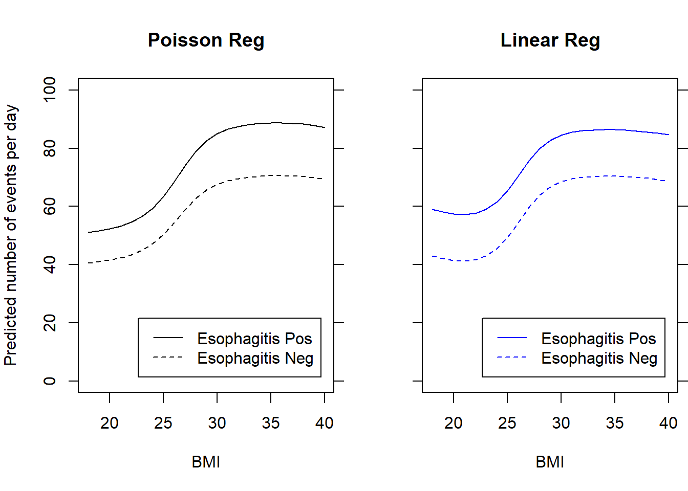
1:1 Transformations
Sometimes we can transform 1 scientific measurement into 1 modeled predictor and acheve approximate linearity
Ex: log transformations will sometimes address apparent threshold effects
set.seed(33)
n <- 200
x <- runif(n)
logx <- log(x)
y <- 0 + logx + rnorm(n)
par(mfrow=c(1,2))
plot(x,y, main="Untransformed")
lines(lowess(y~x), lwd=2)
plot(logx, y, main="Log Transformed X")
lines(lowess(y ~ logx), lwd=2)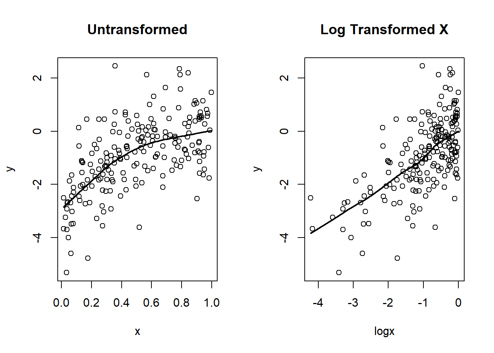
fev <- read.csv(file="data/FEV.csv")
par(mfrow=c(1,2))
plot(fev$height, fev$fev, main="Untransformed", pch='.', xlab="Height",ylab="FEV")
lines(lowess(fev$fev ~ fev$height), lwd=2)
fev$height3 <- fev$height^3
plot(fev$height3, fev$fev, main="Cubed Height", pch='.', xlab="Height^3",ylab="FEV")
lines(lowess(fev$fev ~ fev$height3), lwd=2)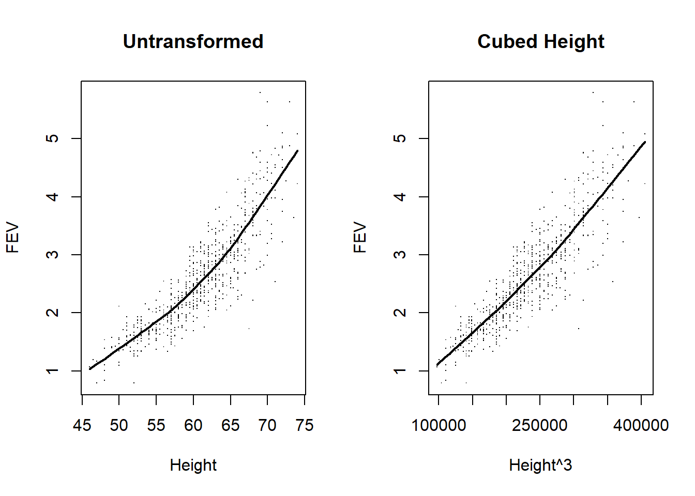
1:Many transformations
Sometimes we transform 1 scientific measurement into several modeled predictors
Polynomial regression
Dummy variables (factor or class variables)
Piecewise linear
Splines
Polynomial regression
Fit linear term plus higher order terms (squared, cubic, …)
Can fit an arbitrarily-complex function
Generally, very difficult to interpret parameters
Special uses
2nd order (quadratic) model to look for U-shaped trends (e.g. alcohol consumption and cardiovascular risk? Potential hypothesis being that moderate consumption of alcohol beneficial relative to either no consumption or high consumption)
Tests for linearity achieved by testing that all higher order terms have parameters equal to zero (hierarchical model)
Full Model: \(g(\theta) = \beta_0 + \beta_1 * X + \beta_2 * X^2 + \beta_3 * X^3\)
Reduced Model: \(g(\theta) = \beta_0 + \beta_1 * X\)
We can try to assess whether any association between mean FEV and height follows a straight line association
Fit a third order (cubic) polynomial due to the known scientific relationship between volume and height (using robust standard error estimates)
# Create squared and cubic terms
fev$ht2 <- fev$height^2
fev$ht3 <- fev$height^3
m1 <- lm(fev ~ height + ht2 + ht3, data=fev)
coeftest(m1, vcov=sandwich)| Estimate | Std. Error | t value | Pr(>|t|) | |
|---|---|---|---|---|
| (Intercept) | 4.5691e-01 | 1.2339e+01 | 0.037030 | 0.97047 |
| height | 3.0595e-02 | 6.3266e-01 | 0.048359 | 0.96144 |
| ht2 | -1.5222e-03 | 1.0746e-02 | -0.141648 | 0.88740 |
| ht3 | 2.5797e-05 | 6.0481e-05 | 0.426524 | 0.66987 |
From the model output, is height a significant predictor of FEV?
Note that the p-values for each term are not significant
But each of these tests are addressing irrelevant questions
height: After adjusting for the 2nd and 3rd order terms relationships, is the linear term important?
htsqr: After adjusting for the linear and 3rd order terms relationships, is the quadratic term important?
htcub: After adjusting for the linear and 2nd order terms relationships, is the cubic term important?
We need to test if test the 2nd and 3rd order terms simultaneously
linearHypothesis(m1, c("ht2",
"ht3"),
vcov=sandwich(m1))| Res.Df | Df | F | Pr(>F) |
|---|---|---|---|
| 652 | |||
| 650 | 2 | 30.641 | 0 |
We find clear evidence that the trend in mean FEV versus height is non-linear (\(p < 0.001\))
Note that if we had seen \(p > 0.05\), we could not be sure it was linear. The relationship may have been non-linear, but not in a way the cubic polynomial could detect
We can try to assess whether any association between mean log FEV and height follows a straight line relationship
Again, we will fit a third order (cubic) polynomial, but this time we do not have any good scientific justification for such a model
fev$logfev <- log(fev$fev)
m2 <- lm(logfev ~ height + ht2 + ht3, data=fev)
coeftest(m2, vcov=sandwich)| Estimate | Std. Error | t value | Pr(>|t|) | |
|---|---|---|---|---|
| (Intercept) | -2.7918e+00 | 4.9700e+00 | -0.561739 | 0.57449 |
| height | 7.0664e-02 | 2.4759e-01 | 0.285404 | 0.77543 |
| ht2 | -1.8281e-04 | 4.0899e-03 | -0.044697 | 0.96436 |
| ht3 | 3.2400e-07 | 2.2404e-05 | 0.014461 | 0.98847 |
Note that again, the p-values for the individual terms are not significant and are still addressing uninteresting scientific questions
Test the squared and cubed terms simultaneously
linearHypothesis(m2, c("ht2",
"ht3"),
vcov=sandwich(m2))| Res.Df | Df | F | Pr(>F) |
|---|---|---|---|
| 652 | |||
| 650 | 2 | 0.29449 | 0.74501 |
We do not find clear evidence that the trend in mean log FEV versus height is non-linear
This does not prove linearity because it could have been nonlinear in a way that a cubic polynomial could not detect
However, my guess it the cubic polynomial would have picked up most reasonable patterns of non-linearity likely to occur in this setting
We have not addressed the question of whether log FEV is associated with height
This question could have been addressed in the cubic model by
Testing all three height-derived variable simultaneously
OR looking at the overall F-test (because only height variables are in the model)
Another alternative would be to fit a model with only the linear term for height
In general, it is a very bad idea to go fishing for models, so pick an approach beforehand and use that
If I suspected a complex dose-response relationship beforehand, I would fit the complex model and test all of the height coefficients
If I just cared about showing a first order trend, the following output would answer that question
m3 <- lm(logfev ~ height, data=fev)
coeftest(m3, vcov=sandwich)| Estimate | Std. Error | t value | Pr(>|t|) | |
|---|---|---|---|---|
| (Intercept) | -2.271312 | 0.068447 | -33.184 | 0 |
| height | 0.052119 | 0.001121 | 46.494 | 0 |
Indicator variables for all but one group
This is the only appropriate method for modeling modeling nominal (unordered) categorical variables
Example: Marital status using indicator for
Married (married=1, everything else=0)
Widowed (widowed=1, everything else=0)
Divorced (divorced=1, everything else=0)
Single would then be the intercept
While it is the only approach for nominal variables, dummy variable coding is often used for other settings
Makes regression equivalent to Analysis of Variance (ANOVA)
ANOVA is an old technique developed by R.A. Fisher in 1921
Can reproduce results of ANOVA exactly with regression, so ANOVA is of limited use today (but will find it around)
Field is a nominal variable, so we must use dummy variables
salary <- read.csv("data/salary.csv")
salary <- salary[salary$year==95,]
salary$field <- factor(salary$field)
salary$field <- relevel(salary$field, ref="Other")
m4 <- lm(salary ~ field, data=salary)
coeftest(m4, vcov=sandwich)| Estimate | Std. Error | t value | Pr(>|t|) | |
|---|---|---|---|---|
| (Intercept) | 6291.6 | 61.01 | 103.1252 | 0 |
| fieldArts | -1013.6 | 104.73 | -9.6775 | 0 |
| fieldProf | 1225.0 | 133.56 | 9.1718 | 0 |
coefci(m4, vcov=sandwich)| 2.5 % | 97.5 % | |
|---|---|---|
| (Intercept) | 6171.97 | 6411.31 |
| fieldArts | -1218.99 | -808.13 |
| fieldProf | 963.05 | 1487.01 |
Interpretation based on coding used
Intercept corresponds to the mean salary in the Other field
These faculty will have both arts==0 and prof==0
Estimated mean salary of $6292 per month (95% CI: [6172, 6411])
Highly statistically different from $0 per month (a worthless test)
Slope for arts is difference in mean salary between Fine Arts and Other fields
Fine Arts faculty will have arts==1 and prof==0; Other faculty will have arts==0 and prof==0
Estimated difference in mean salary is $1014 lower (95% CI: [808, 1219] lower salary)
Highly statistically different from $0 per month (a useful test, if we specified it a priori)
Slope for prof is difference in mean salary between Professional and Other fields
Professional faculty will have arts==0 and prof==1; Other faculty will have arts==0 and prof==0
Estimated difference in mean salary is $1225 higher (95% CI: [963, 1487] higher salary)
Highly statistically different from $0 per month (a useful test, if we specified it a priori)
Because we modeled the three groups with two predictors plus an intercept, the estimates agree exactly with the sample means
No borrowing of information across field
If we had used a different reference group rather than Other, would also see agreement between model estimates and sample means
Hypothesis test: To test for mean salary differences by field
We have modeled field using two variables
Both slopes would have to be zero for there to be no association between field and mean salary
Want to simultaneously tests the two slopes
linearHypothesis(m4, c("fieldArts","fieldProf"),
vcov=sandwich(m4))| Res.Df | Df | F | Pr(>F) |
|---|---|---|---|
| 1596 | |||
| 1594 | 2 | 121.08 | 0 |
We can also use dummy variables to represent continuous variables
Continuous variables measured at discrete levels (e.g. dose in an interventional experiment)
Continuous variables divided into categories (often a bad idea)
Dummy variables will fit groups exactly
With continuous variables, dummy variable coding assumes a step-function is true
Modeling with dummy variables ignores order of predictor of interest
m.dummy <- lm(height ~ factor(age), data=fev)
newdata <- data.frame(age=3:19)
newdata$ht.dummy <- predict(m.dummy, newdata=newdata)
ggplot(fev, aes(x=age, y=height)) + geom_point() + theme_bw() +
geom_point(data=newdata, aes(x=age, y=ht.dummy), col="red", size=3)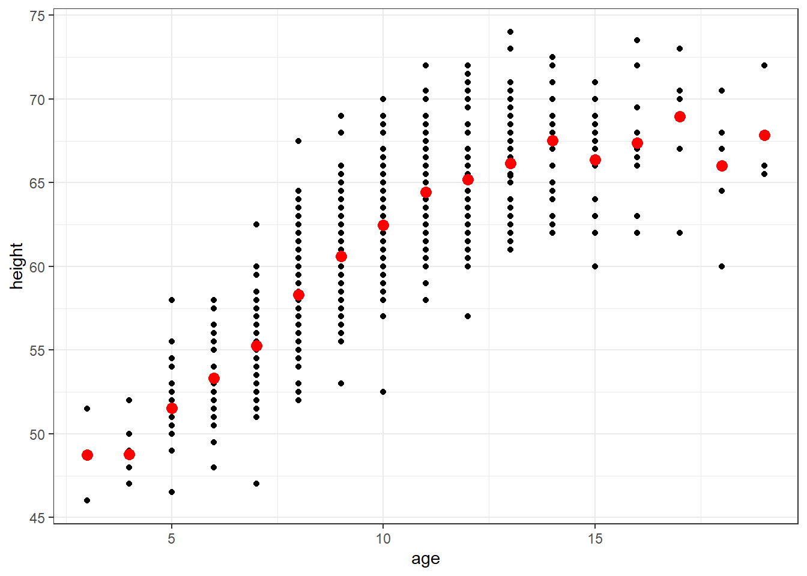
The red points in the plot represents the mean height by subgroups defined by years of age
Dummy variables are used for each age (measured in years)
Step function (e.g. when age changes from 8.999 to 9.000, expected height increases)
Several ages have few subjects, which makes the estimates unreliable
Do we really believe that average height of 18 year olds is less than the average height of 14, 15, 16, 17, and 19 year old?
Predicted heights for observed ages from the dummy variable and two polynomial models
newdata[12:17,]| age | ht.dummy | |
|---|---|---|
| 12 | 14 | 67.520 |
| 13 | 15 | 66.368 |
| 14 | 16 | 67.385 |
| 15 | 17 | 68.938 |
| 16 | 18 | 66.000 |
| 17 | 19 | 67.833 |
We have methods that can fit a wide variety of curve shapes
Dummy variables: Step function with tiny steps
Polynomials: If high degree, allows many patterns of curvature
Splines: Piecewise linear or piecewise polynomial
We can fit high order polynomials to flexibly model a continuous covariate
A continuous covariate with \(k\) levels can be perfectly modeled using polynomials up to degree \(k-1\).
In the Height and Age dataset, there are 17 unique values of age (age is rounded to the nearest year), so we can perfectly model the means using polynomials up to degree 16
\(E[Height | Age = a] = \beta_0 + \beta_1 * a + \beta_2 * a^2 + \ldots + \beta_{16} * a^{16}\)
Each \(\beta\) is difficult to interpret, but the predicted value at the integer levels of age make sense.
Predicted values of height at non-integer values of age (e.g. age of 18.5) may not make sense
Polynomials become especially unstable near the upper and lower bounds of the age distribution. Stability near the upper and lower bounds is a general concern in many spline approaches.
A polynomial of lesser degree could also be considered. I show a model that includes polynomials for age up to degree 3 in the following plot. It is also less stable near the upper and lower bounds of age, but not as obviously so as the 16 degree polynomial.
ggplot(fev, aes(x=age, y=height)) + geom_point() + theme_bw() +
geom_smooth(method=lm, formula=y ~ poly(x,16), se=FALSE) +
geom_smooth(method=lm, formula=y ~ poly(x,3), se=FALSE, col="Green") +
geom_point(data=newdata, aes(x=age, y=ht.dummy), col="red", size=3)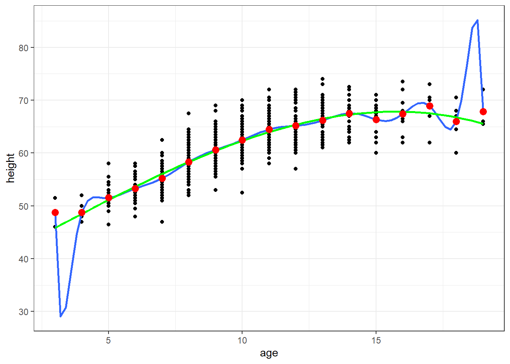
m.poly16 <- lm(height ~ poly(age,16), data=fev)
m.poly3 <- lm(height ~ poly(age,3), data=fev)
newdata$ht.poly16 <- predict(m.poly16, newdata)
newdata$ht.poly3 <- predict(m.poly3, newdata)
newdata[12:17,]| age | ht.dummy | ht.poly16 | ht.poly3 | |
|---|---|---|---|---|
| 12 | 14 | 67.520 | 67.520 | 67.288 |
| 13 | 15 | 66.368 | 66.368 | 67.745 |
| 14 | 16 | 67.385 | 67.385 | 67.829 |
| 15 | 17 | 68.938 | 68.937 | 67.513 |
| 16 | 18 | 66.000 | 66.000 | 66.768 |
| 17 | 19 | 67.833 | 67.833 | 65.566 |
Piecewise linear curves
Joined at “knots”
Straight lines in between the knots
Convenient parametrizations such that (1) coefficients are slopes of consecutive segments or (2) coefficients are slope changes at consecutive knots
Advantages
Interpretability. Has the interpretation as the slope (or slope change) from the regression model, but within a range of \(X\)
Best to specify know locations in advance for desired scientific interpretation
Nested within a restriced model with a single slope term (hierarchcical structure allow comparisons of complex to simpler models)
Disadvantages
Stata: mkspline newvar0 knot1 newvar1 knot2 newvar2 ... knotp newvarp = oldvar
Would then run regression using newvar0 … newvarp
Assumes straight lines between min and knot1; knot1 and knot2; etc.
In R, we can use the lspline package to make the linear splines
The following results will look at age and height using linear splines with 2 knots and 4 knots
ggplot(fev, aes(x=age, y=height)) + geom_point() + theme_bw() +
geom_smooth(method=lm, formula=y ~ lspline(x, knots=c(9.5,15.5)), se=FALSE) +
geom_smooth(method=lm, formula=y ~ lspline(x, knots=c(6.5,9.5,12.5,15.5)), se=FALSE, col="Green") +
geom_point(data=newdata, aes(x=age, y=ht.dummy), col="red", size=3)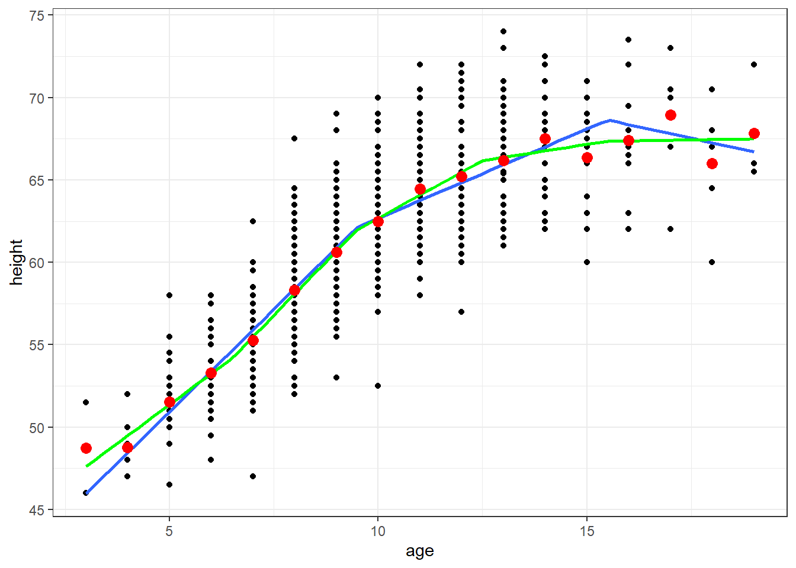
m.linspline.nonmar <- lm(height ~ lspline(age, knots=c(9.5,15.5)), data=fev)
coeftest(m.linspline.nonmar, varcov=sandwich)| Estimate | Std. Error | t value | Pr(>|t|) | |
|---|---|---|---|---|
| (Intercept) | 38.49107 | 0.813179 | 47.3341 | 0.00000 |
| lspline(age, knots = c(9.5, 15.5))1 | 2.48855 | 0.099940 | 24.9005 | 0.00000 |
| lspline(age, knots = c(9.5, 15.5))2 | 1.08521 | 0.088609 | 12.2472 | 0.00000 |
| lspline(age, knots = c(9.5, 15.5))3 | -0.55308 | 0.371351 | -1.4894 | 0.13687 |
coefci(m.linspline.nonmar, varcov=sandwich)| 2.5 % | 97.5 % | |
|---|---|---|
| (Intercept) | 36.89430 | 40.08785 |
| lspline(age, knots = c(9.5, 15.5))1 | 2.29231 | 2.68480 |
| lspline(age, knots = c(9.5, 15.5))2 | 0.91122 | 1.25921 |
| lspline(age, knots = c(9.5, 15.5))3 | -1.28228 | 0.17611 |
(Intercept) is the expect height when age is 0. Since this is outside the range of our data, it has no scientific interpretation.
The first slope term (‘lspline(age, knots = c(9.5, 15.5))1’) is the expected change in height comparing two individuals who differ in age by one year when both subjects are 9 years old or less. Comparing two children who are both 3 to 9 years old and differ in age by one year, the older child on average will be 2.49 inches taller than the younger child. We are 95% confident the true difference in height is between 2.29 and 2.68 inches taller.
That is, the model assumes that the change in height comparing 3 to 4, 4 to 5, 5 to 6, 6 to 7, 7 to 8, 8 to 9 is the same (a similar growth rate over these age ranges)
The model borrow strength across the age ranges by assuming the same slope
The model borrows strength across the next age range by assuming the mean height at the knot (9.5 years) is the same at the upper end of first age group and the lower end of the second age group.
The second slope term (‘lspline(age, knots = c(9.5, 15.5))2’) is the expected change in height comparing two individuals who differ in age by one year when both subjects are between 10 and 15 years old
The third slope term (‘lspline(age, knots = c(9.5, 15.5))3’) is the expected change in height comparing two individuals who differ in age by one year when both subjects are 16 years old or older
We can test if the age-height slope significantly changes with age category
linearHypothesis(m.linspline.nonmar,
c("lspline(age, knots = c(9.5, 15.5))1=lspline(age, knots = c(9.5, 15.5))2",
"lspline(age, knots = c(9.5, 15.5))1=lspline(age, knots = c(9.5, 15.5))3"),
vcov=sandwich(m.linspline.nonmar))| Res.Df | Df | F | Pr(>F) |
|---|---|---|---|
| 652 | |||
| 650 | 2 | 85.721 | 0 |
We reject the null hypothesis (\(P<0.001\)) and conclude the linear spline model is a better fit than the restricted model, \(E[Height | Age = a] = \beta_0 + \beta_1 * a\)
The following is the basis matrix for the linear spline (non-marginal) for ages 3 to 19. It is relatively easy to calculate this matrix
cbind(3:19, lspline(3:19, knots = c(9.5, 15.5)))| 1 | 2 | 3 | |
|---|---|---|---|
| 3 | 3.0 | 0.0 | 0.0 |
| 4 | 4.0 | 0.0 | 0.0 |
| 5 | 5.0 | 0.0 | 0.0 |
| 6 | 6.0 | 0.0 | 0.0 |
| 7 | 7.0 | 0.0 | 0.0 |
| 8 | 8.0 | 0.0 | 0.0 |
| 9 | 9.0 | 0.0 | 0.0 |
| 10 | 9.5 | 0.5 | 0.0 |
| 11 | 9.5 | 1.5 | 0.0 |
| 12 | 9.5 | 2.5 | 0.0 |
| 13 | 9.5 | 3.5 | 0.0 |
| 14 | 9.5 | 4.5 | 0.0 |
| 15 | 9.5 | 5.5 | 0.0 |
| 16 | 9.5 | 6.0 | 0.5 |
| 17 | 9.5 | 6.0 | 1.5 |
| 18 | 9.5 | 6.0 | 2.5 |
| 19 | 9.5 | 6.0 | 3.5 |
m.linspline.mar <- lm(height ~ lspline(age, knots=c(9.5,15.5), marginal=TRUE), data=fev)
coeftest(m.linspline.mar, varcov=sandwich)| Estimate | Std. Error | t value | Pr(>|t|) | |
|---|---|---|---|---|
| (Intercept) | 38.4911 | 0.81318 | 47.3341 | 0.00000000 |
| lspline(age, knots = c(9.5, 15.5), marginal = TRUE)1 | 2.4886 | 0.09994 | 24.9005 | 0.00000000 |
| lspline(age, knots = c(9.5, 15.5), marginal = TRUE)2 | -1.4033 | 0.16335 | -8.5911 | 0.00000000 |
| lspline(age, knots = c(9.5, 15.5), marginal = TRUE)3 | -1.6383 | 0.42028 | -3.8981 | 0.00010701 |
coefci(m.linspline.mar, varcov=sandwich)| 2.5 % | 97.5 % | |
|---|---|---|
| (Intercept) | 36.8943 | 40.08785 |
| lspline(age, knots = c(9.5, 15.5), marginal = TRUE)1 | 2.2923 | 2.68480 |
| lspline(age, knots = c(9.5, 15.5), marginal = TRUE)2 | -1.7241 | -1.08259 |
| lspline(age, knots = c(9.5, 15.5), marginal = TRUE)3 | -2.4636 | -0.81303 |
(Intercept) is the expect height when age is 0. Since this is outside the range of our data, it has no scientific interpretation.
The first slope term (‘lspline(age, knots = c(9.5, 15.5))1’) is the expected change in height comparing two individuals who differ in age by one year when both subjects are 9 years old or less.
The second slope term (‘lspline(age, knots = c(9.5, 15.5))2’) is the change in the age-height slope for 10 to 15 year olds versus 3 to 9 year olds. This output is useful for estimating and testing the slope changes over age.
The third slope term (‘lspline(age, knots = c(9.5, 15.5))3’) is the change in the age-height slope for 16 to 19 year olds versus 3 to 9 year olds. This output is useful for estimating and testing the slope changes over age.
Using this model, we can test if the age-height slope significantly changes with age category
linearHypothesis(m.linspline.mar,
c("lspline(age, knots = c(9.5, 15.5), marginal = TRUE)2",
"lspline(age, knots = c(9.5, 15.5), marginal = TRUE)3"),
vcov=sandwich(m.linspline.mar))| Res.Df | Df | F | Pr(>F) |
|---|---|---|---|
| 652 | |||
| 650 | 2 | 85.721 | 0 |
Polynomial splines introduces squared or cubic terms to increase the smoothness of the estimate. In particular, compare to linear splines, they are no abrupt changes in the slope at each knot point.
There are various types of polynomial splines, each with different formulas applied to generate the basis matrix for the regression model
We can choose to modify several parameters, depending on the function
Number of knots
Where to place the knots (or use defaults based on quantiles and number of knots)
Degree of the polynomial. In practice, rarely is a degree over 3 considered
Increasing the number of knots and the degree of the polynomial will increase the flexibility of the model
Several different comparisons are shown in the following plots
ggplot(fev, aes(x=age, y=height)) + geom_point() + theme_bw() +
geom_smooth(method=lm, formula=y ~ poly(x, 3), se=FALSE, aes(color="Blue")) +
geom_smooth(method=lm, formula=y ~ bs(x,3), se=FALSE, aes(col="Green")) +
geom_point(data=newdata, aes(x=age, y=ht.dummy), col="Red", size=3) +
scale_colour_manual(name="Model", values=c("Blue", "Green"), labels=c("poly(x,3)","bs(x,3)")) + theme(legend.position = c(0.8, 0.2))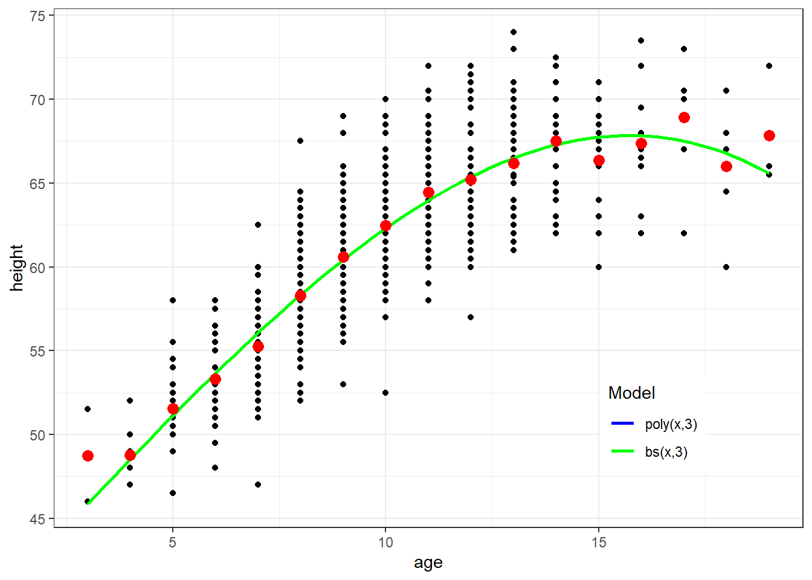
ggplot(fev, aes(x=age, y=height)) + geom_point() + theme_bw() +
geom_smooth(method=lm, formula=y ~ lspline(x,knots=c(9.5, 15.5)), se=FALSE, aes(color="Blue")) +
geom_smooth(method=lm, formula=y ~ bs(x,knots=c(9.5, 15.5), degree=3), se=FALSE, aes(color="Green")) +
geom_point(data=newdata, aes(x=age, y=ht.dummy), col="red", size=3) +
scale_colour_manual(name="Model", values=c("Blue", "Green"), labels=c("lspline(x,knots=c(9.5, 15.5))","bs(x,knots=c(9.5, 15.5)")) + theme(legend.position = c(0.8, 0.2))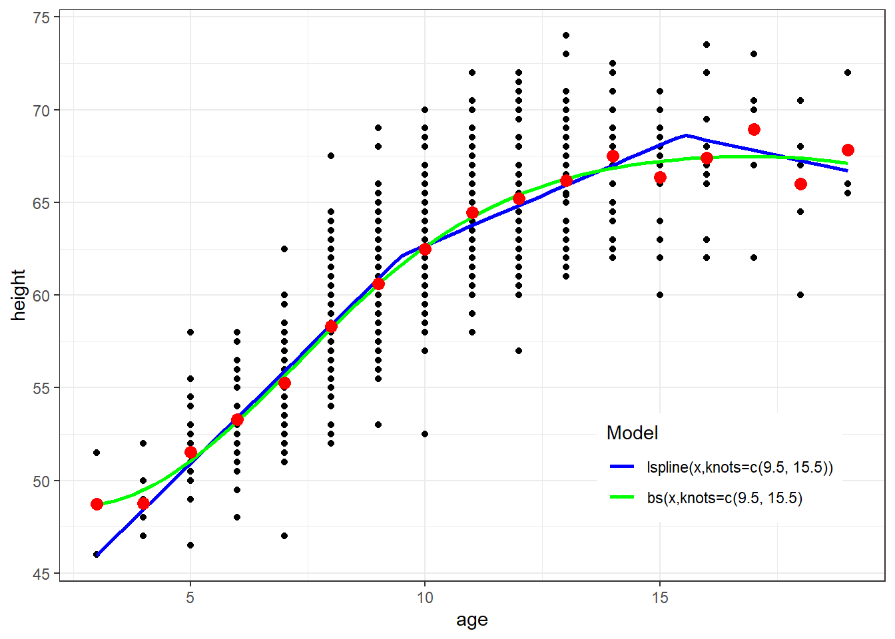
ggplot(fev, aes(x=age, y=height)) + geom_point() + theme_bw() +
geom_smooth(method=lm, formula=y ~ ns(x, df=3), se=FALSE, aes(color="Blue")) +
geom_smooth(method=lm, formula=y ~ bs(x,3, knots=c(9.5, 15.5)), se=FALSE, aes(color="Green")) +
geom_point(data=newdata, aes(x=age, y=ht.dummy), col="red", size=3)+
scale_colour_manual(name="Model", values=c("Blue", "Green"), labels=c("ns(x, df=3)","bs(x,3, knots=c(9.5, 15.5)")) + theme(legend.position = c(0.8, 0.2))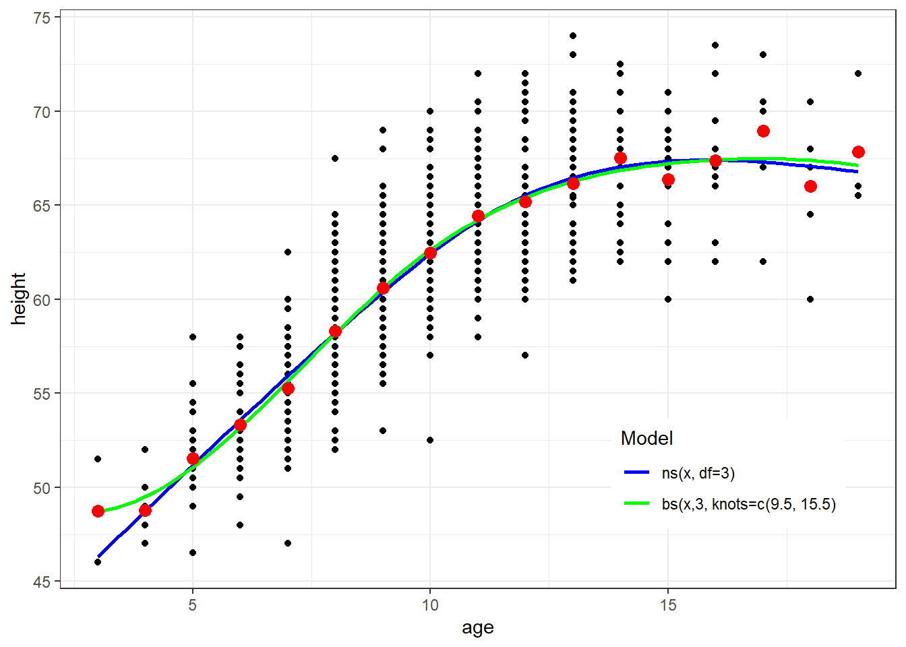
Natural splines and restricted cubic spline are both cubic splines with restrictions of linearity beyond the boundary knot locations
They have different inputs which can result in different model fits
ggplot(fev, aes(x=age, y=height)) + geom_point() + theme_bw() +
geom_smooth(method=lm, formula=y ~ ns(x, knots=c(9.5, 15.5)), se=FALSE, aes(color="Blue")) +
geom_smooth(method=lm, formula=y ~ rcs(x, parms=c(0, 9.5, 15.5, 19)), se=FALSE, aes(color="Green")) +
geom_point(data=newdata, aes(x=age, y=ht.dummy), col="red", size=3) +
scale_colour_manual(name="Model", values=c("Blue", "Green"), labels=c("ns(x, knots=c(9.5, 15.5)","rcs(x, parms=c(0, 9.5, 15.5, 19)")) + theme(legend.position = c(0.8, 0.2))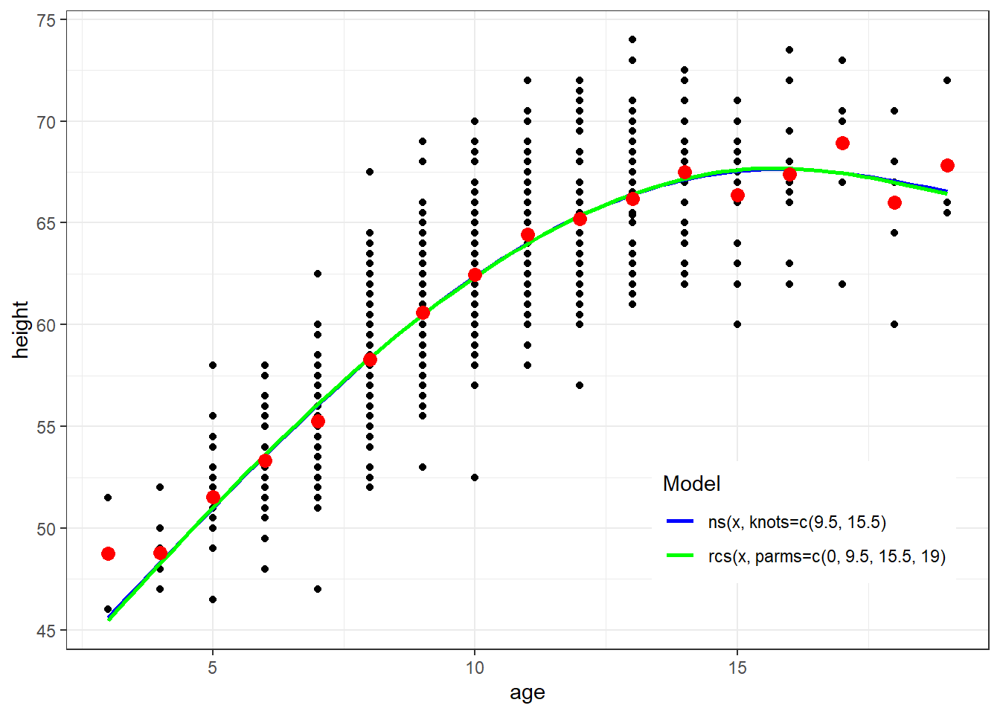
ggplot(fev, aes(x=age, y=height)) + geom_point() + theme_bw() +
geom_smooth(method=lm, formula=y ~ ns(x, df=3), se=FALSE, aes(color="Blue")) +
geom_smooth(method=lm, formula=y ~ rcs(x, nk=5), se=FALSE, aes(color="Green")) +
geom_point(data=newdata, aes(x=age, y=ht.dummy), col="red", size=3) +
scale_colour_manual(name="Model", values=c("Blue", "Green"), labels=c("ns(x, df=3)","rcs(x, nk=5)")) + theme(legend.position = c(0.8, 0.2))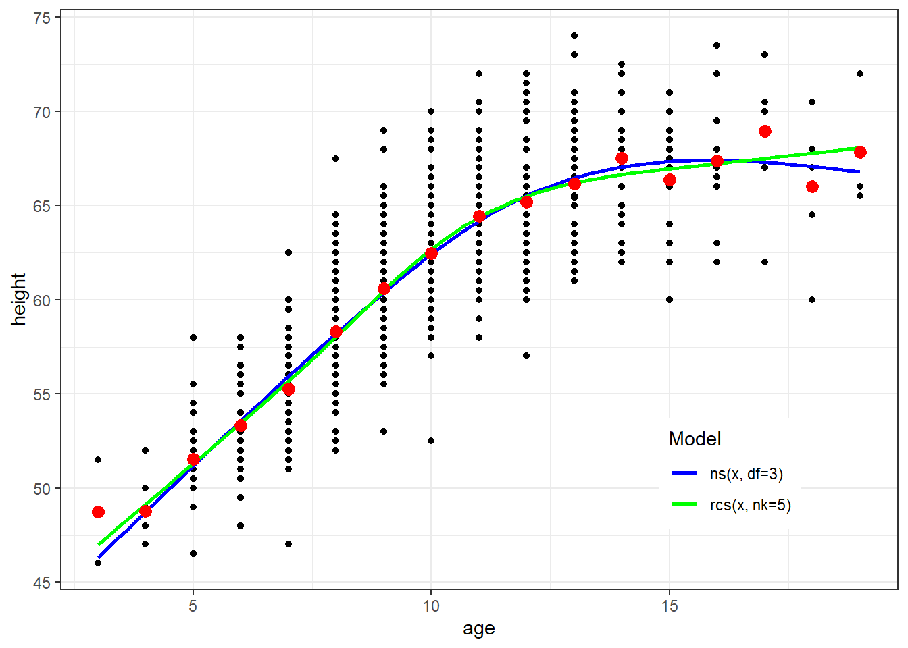
ggplot(fev, aes(x=age, y=height)) + geom_point() + theme_bw() +
geom_smooth(method=lm, formula=y ~ ns(x, df=3), se=FALSE, aes(color="Blue")) +
geom_smooth(method=lm, formula=y ~ lspline(x, knots=c(9.5,15.5)), se=FALSE, aes(color="Green")) +
geom_point(data=newdata, aes(x=age, y=ht.dummy), col="red", size=3) +
scale_colour_manual(name="Model", values=c("Blue", "Green"), labels=c("ns(x, df=3)","lspline(x, knots=c(9.5,15.5)")) + theme(legend.position = c(0.8, 0.2))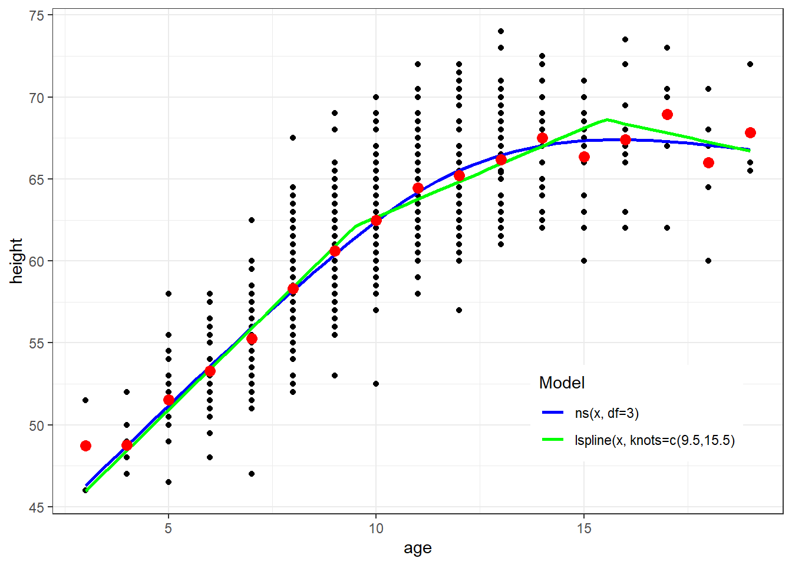
There are a variety of methods for flexibly modeling continuous covariates
Approach you use should be pre-specified and based on scientific considerations
Splines for predictor of interest in an association study
If you want to be able to write numerical summaries of your results, consider piecewise linear splines
May provide an adequate summary of your results, particularly for comparison between two knots
Comparison between subgroups separated by a knot location more challenging as you have a change in slope
Formal test can be conducted to determine if the slope is significantly different on ranges of \(X\) (hierarchical models)
Best to pre-specify your knot locations based on relevant scientific meaning
Lacking scientific reasons, it is OK to use quantiles as the quantiles are not related to the outcome (unsupervised learning)
Should not pick knot locations after looking at the outcome unless you have a plan for how to adjust your analysis for making data-driven decision (this type of adjustment is hard to do, so I recommend avoiding it)
Spline for estimating means or prediction of new observations
Flexible methods most appropriate in this approach
Be careful of behavior of your splines at the extremes of your continuous covariates
Degrees of freedom, or allowed model complexity needs to be considered in terms of the effective sample size for the type of outcome you are studying
Effective sample sizes
Allowed model complexity is, roughly, gain one available degree of freedom per every 10-15 of effective sample size
Degrees of freedom can be spent on dummy variable, knot locations, and degree of polynomial
Degrees of freedom can be saved by constraints, such as the linearity constraint at the tails for natural splines and restricted cubic spline. These are popular splines because the constraint often saves degrees of freedom while improving the generalizability of the fit at the tails of the continuous distribution
These are approximatione, and the allowed model complexity can depend on other characteristics of the data too
Splines for effect modification (continuous effect modifier and/or continuous predictor of interest)
Choice of model should be dictated by scientific considerations first
Statistically, we have limited power to detect effect modification
Linear terms for modeling effect modification may suffice
Flexible models for a precision variable
Often most of the association of the precision variable with the outcome can be capture in a linear term
However, if justified, can consider a flexible model too
Goal of a precision variable is to explain residual variability in the outcome after accounting for the predictor of interest (and, possibly, confounders that are included in the model)
Flexible models for confounders
Often it is important to adjust for confounders adequately, so a spline or other flexible function can help
If we are not interested in interpreting the effect of the confounder, then we are free to model it a variety of different ways
Argues for flexibly modeling continuous confounder (limited by the effective sample size)
Note that if the confounder effect really is a straight line, then a cubic spline with linearity constraints on the tails should also fit adequately
There is not much to be lost and potentially much to be gained by pre-specifying a flexible model for a continuous confounder
If it is a straight line, a flexibly spline or a linear tearm can capture the association (either would adjust for confounding)
If it is not a straight line, a flexible spline can capture the assocation while a linear term cannot (spline would more completly adjust for confouding)
ggplot(fev, aes(x=height, y=logfev)) + geom_point() + geom_smooth(method=lm, se=FALSE) +
geom_smooth(method=lm, formula=y ~ ns(x, df=3), se=FALSE, color="Green")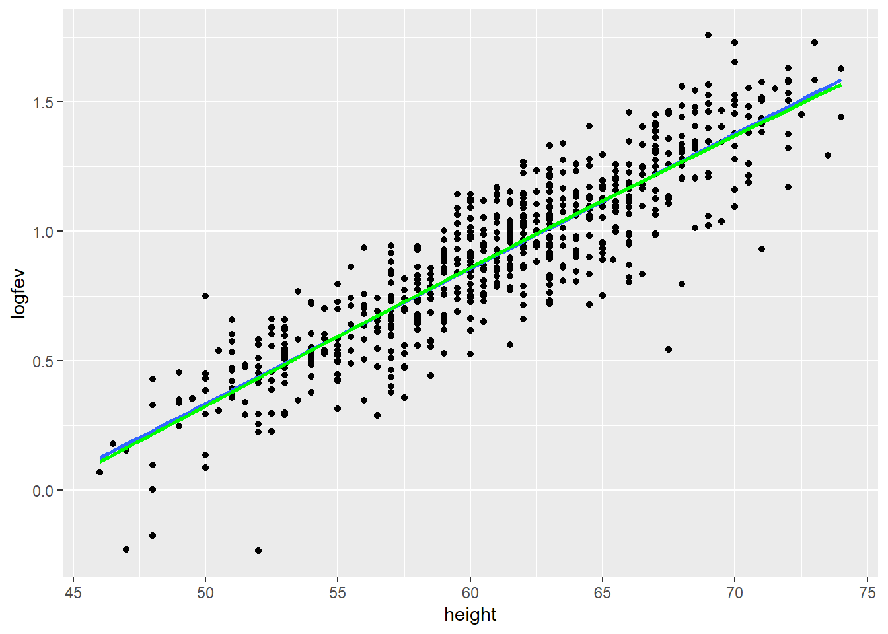
nrow(fev) / 15[1] 43.6fev$smoker <- (fev$smoke=="current smoker")+0
fev$male <- (fev$sex=="male")+0
m1 <- lm(fev ~ smoker + ns(age,3) + ns(height,3) + male, data= fev)
coeftest(m1, vcov=sandwich(m1))| Estimate | Std. Error | t value | Pr(>|t|) | |
|---|---|---|---|---|
| (Intercept) | 1.090121 | 0.071522 | 15.2418 | 0.0000e+00 |
| smoker | -0.147092 | 0.076797 | -1.9153 | 5.5892e-02 |
| ns(age, 3)1 | 0.494765 | 0.102371 | 4.8330 | 1.6823e-06 |
| ns(age, 3)2 | 0.506067 | 0.205409 | 2.4637 | 1.4011e-02 |
| ns(age, 3)3 | 0.807844 | 0.147608 | 5.4729 | 6.3400e-08 |
| ns(height, 3)1 | 1.430324 | 0.088439 | 16.1731 | 0.0000e+00 |
| ns(height, 3)2 | 3.262242 | 0.215641 | 15.1281 | 0.0000e+00 |
| ns(height, 3)3 | 2.709726 | 0.158847 | 17.0588 | 0.0000e+00 |
| male | 0.096504 | 0.033492 | 2.8814 | 4.0906e-03 |
The betas for the naturally-splined terms (age, height) are difficult to interpret directly. We could test for age and or height effect if that was of scientific interest using the Wald approach.
For the predictor of interest, smoker, we have the usual interpretation in terms of holding other covariates constant. “Among subjects of the same age, height, and sex but differing in smoking status…” However, we may be controlling for the confounding effects of age and height effects more completely by using flexible spline functions.